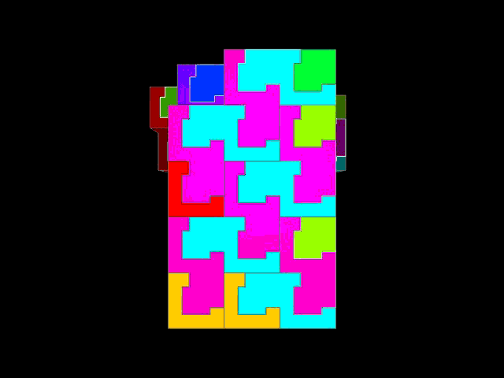
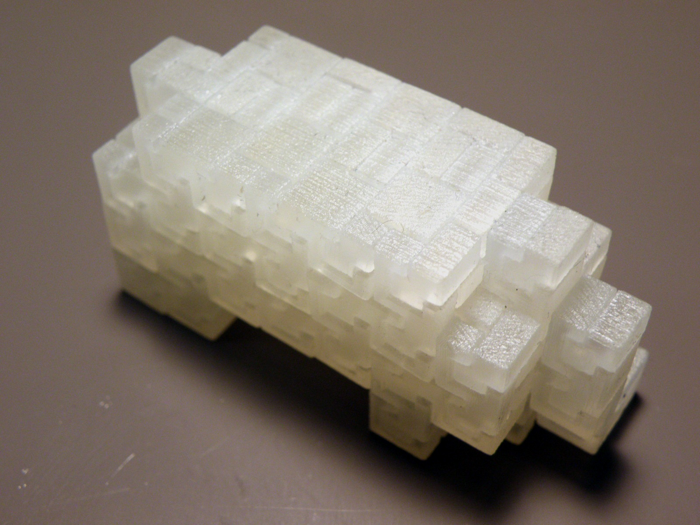

a new kind of minimalism
minimalism is a form of art that attempts to render subjects using their essential features.
perhaps minimalism renders at the edge of recognition,
the transition between concrete and abstract,
but where is that inflection point?
for arguments sake, let's say it's at the 50 percentile of recognition.
minimals
in order to test our idea,
we'll consider animals as our shapes, because
everyone knows their animals.
we grow up with animals as friends.
they are a huge part of our early world.
they are some of the first objects that we see and name.
in order to vary the level of abstraction,
we'll build them out of varying resolution voxelizations.
our goal will be to create 50% recognizable animals.
we'll call them minimals.

aha
some people will have aha moments.
others will never know.
meanwhile, we'll have fun and
save materials in the deal and be
able to build even more minimals.
compression and information
now how many voxels does it take to produce a recognizable elephant?
are there animals that require fewer voxels because
they are more unique?
how do we measure the complexity of shape?
crowd source the answer
can we find the abstraction cliff?
is it even a cliff?
if only we could ask people.
well, actually it turns out we can, but indirectly..
we'll create a survey
that presents animals at random resolutions and
asks people to identify the animal or say they don't know.
we can then find the inflection point from abstract to concrete.
after running the survey, we will have the complete data set and
be able to plot the recognition curves with
resolution on the x axis and percentage of correct answers on the y axis.
data as art
data has arguably replaced theories in driving science.
can data become the driver of a new kind of art?
karl sims [0] and others [1] created user driven evolutionary art.
it would appear that we are
now more than ever in a great position to drive art
through data in novel ways.
digital materials
in order to construct the minimals, we will build them out of digital materials
of our own design.
shapes are built out of a single interlocking part
that is inserted from a single direction.
the material is the ultimate recyclable substance,
allows for very inexpensive robotic assembly,
is hierarchical to allow for log number of parts for a given desired resolution, and
permits the construction of very strong structural forms.

collision 16
the results of this survey will be shown as plots and will determine the sculptures that jonathan ward and i will build for our minimals art piece which will show in the collision16 art show opening friday night 6-9pm feb 25 at axiom gallery in jamaica plain located on the ground floor of the green street subway station at 141 green street:
art scientists
jackbackrack is a principal at and cofounder of
otherlab and researcher at berkeley and mit.
jonathan ward is a phd student in media arts and sciences at center for bits and atoms at mit.
references
[0] karl sims, artificial evolution for computer graphics, siggraph 1991, pp. 319-328.
[1] scott draves, electric sheep
evolving
Last modified: Sun Feb 13 19:23:48 EST 2011